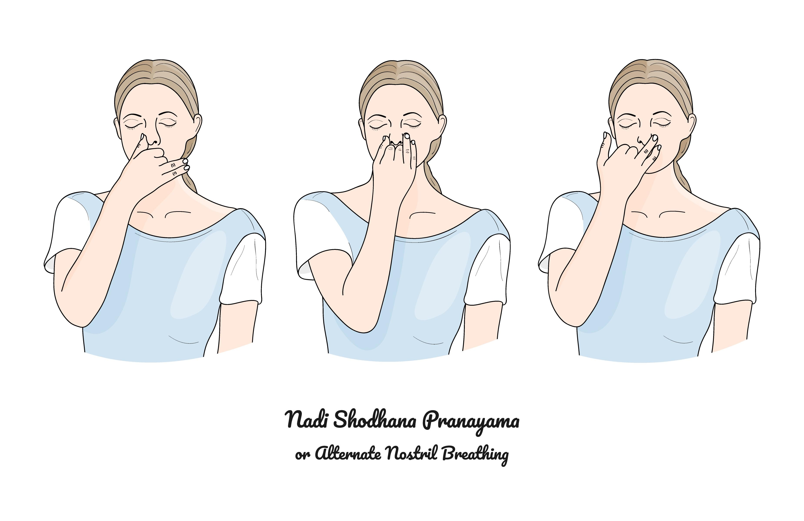
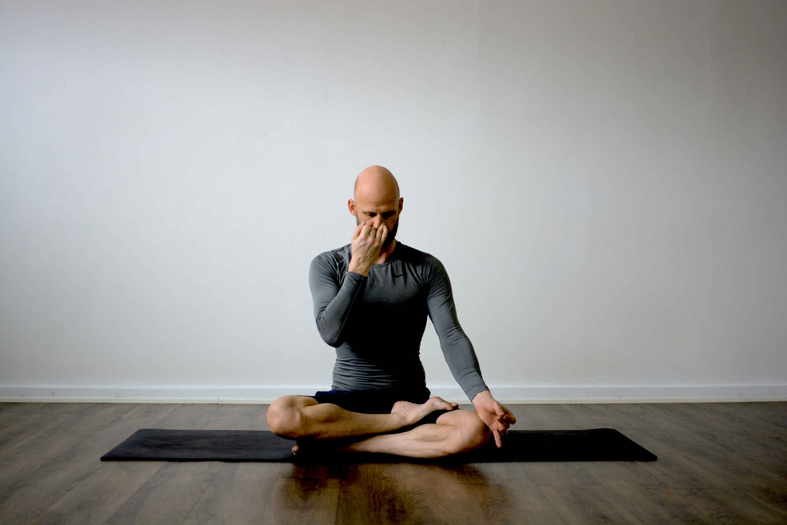
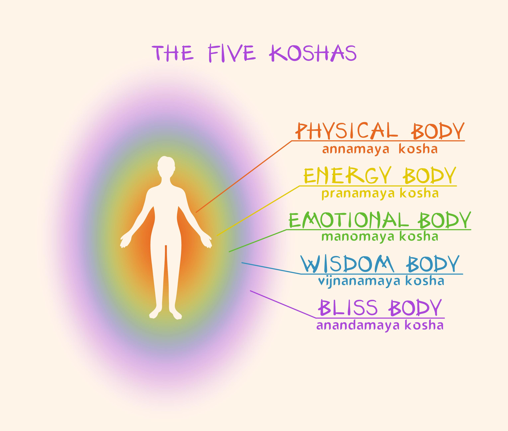
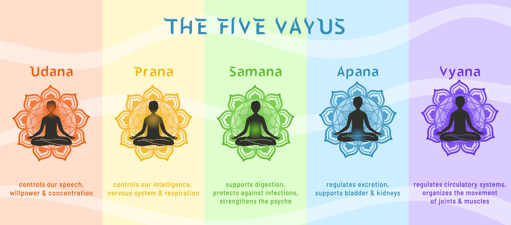

В забързаното ежедневие между работа, семейство и отговорности често казваме: „Нямам енергия."
Но какво всъщност означава това?
Пранаяма не е просто дихателна техника. Тя е древна йогийска практика за разширяване и управление на жизнената енергия – онова, което в йога се нарича прана. За разлика от обикновеното дишане, пранаяма включва съзнателен контрол и разширяване на енергийния поток в тялото.

Думата пранаяма произлиза от две части:
- прана – жизнена енергия, жизнена сила
- аяма – разширяване, удължаване, разгръщане
Следователно пранаяма означава разширяване на измерението на жизнената енергия, а не просто „контрол на дишането". Това е ключовата разлика между обикновеното дишане и йогийската практика на пранаяма.
Четирите основни аспекта на пранаяма

Всяка практика на пранаяма включва четири основни етапа:
- Пурака – вдишване
- Речака – издишване
- Антар кумбхака – задържане на въздуха след вдишване
- Бахир кумбхака – задържане след издишване
Най-съществената част е кумбхака (задържането на дъха). Но тя се овладява постепенно. Затова в началото се набляга на правилното, ритмично и дълбоко вдишване и издишване.
Съществува и по-висш етап – кевала кумбхака – спонтанно задържане на дъха, което настъпва при дълбока медитация и силна вътрешна концентрация.
Петте тела в йога и енергийното тяло

Според йогийската философия човекът има пет обвивки (коши):
- Анамя майа коша – физическо тяло
- Пранамая коша – енергийно тяло
- Маномая коша – умствено тяло
- Виджнянамая коша – интуитивно/висше ментално тяло
- Анандамайа коша – тяло на блаженството
Пранаяма работи основно с пранамая коша – нашето енергийно тяло. Когато потокът на прана е хармоничен, ние се чувстваме жизнени, стабилни и спокойни. Когато е блокиран – усещаме изтощение, напрежение и често се разболяваме.
Петте основни прани в тялото

В енергийното тяло действат пет основни потока:
- Прана – управлява гръдния кош, сърцето и дишането
- Апана – свързана с отделителната система и елиминирането
- Самана – контролира храносмилането и трансформацията
- Удана – отговаря за гърлото, сетивата и изправената стойка
- Вяна – разпределя енергията в цялото тяло
Когато тези енергии са балансирани, организмът функционира оптимално – както физически, така и психически.
Дишането, здравето и умът
Човек диша средно около 15 пъти в минута – над 21 000 пъти дневно.
И въпреки това повечето хора дишат плитко и неефективно.
Неправилното дишане води до:
- хронична умора
- напрежение
- тревожност
- нарушена концентрация
Дълбокото, ритмично и спокойно дишане:
- балансира нервната система
- успокоява ума
- подобрява оксигенацията
- повишава жизнеността
Пранаяма е мост между съзнателното и подсъзнателното. Чрез съзнателен контрол на дишането ние постепенно освобождаваме натрупано напрежение и психични блокажи.
Дишането и продължителността на живота
Древните йоги наблюдавали природата:
- Животни с бавно дишане (слон, костенурка) живеят дълго.
- Животни с учестено дишане (куче, заек) живеят по-кратко.
Бавното, дълбоко дишане поддържа сърцето по-силно и стабилно.
За хората между 35 и 55 години това е особено важно – в период, в който стресът, отговорностите и темпото на живот често изчерпват вътрешните ресурси.
Пранаяма и вътрешното развитие
Освен физическите ползи, пранаяма има дълбоко вътрешно измерение.
Когато потокът на прана стане хармоничен:
- умът се успокоява
- мислите се подреждат
- реакциите стават по-осъзнати
- вътрешният конфликт намалява
Това отваря вратата към по-дълбока концентрация, медитация и вътрешна яснота.
Важни насоки за практиката
Преди да започнете с пранаяма, важно е да знаете следните основни принципи:
- Пранаяма се практикува след асани – йога позите подготвят тялото и нервната система за дихателните техники.
- Не се изпълнява при остро заболяване – особено при проблеми с дихателната система или сърцето.
- Напредналите техники изискват опитен учител – кумбхака и други сложни практики трябва да се изучават под ръководство.
- Балансът и умереността са ключови – не се принуждавайте, започнете бавно и постепенно.
За начинаещите: започнете с прости упражнения за коремно дишане и наблюдение на дъха. Дори 5–10 минути дневно могат да променят начина, по който се чувствате и да подобрят енергийния ви баланс.
Заключение
Пранаяма не е просто техника за дишане.
Тя е инструмент за възстановяване на жизнената сила, балансиране на ума и разширяване на съзнанието.
В етап от живота, в който търсим устойчивост, здраве и вътрешно спокойствие, практиката на съзнателното дишане може да се превърне в един от най-ценните ни ресурси.
Започнете бавно. Дишайте осъзнато.
И позволете на жизнената енергия да се разгърне.
Заинтересовани ли сте от персонализирана йога практика? Разгледайте нашата Naga Yogi програма за индивидуален подход към хатха йога, или се запишете за безплатна 1:1 консултация.